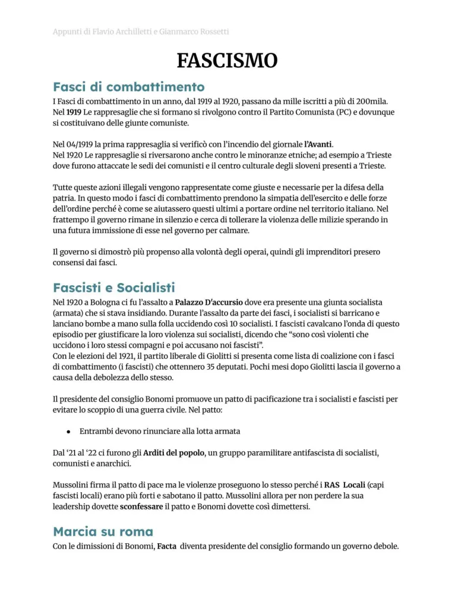
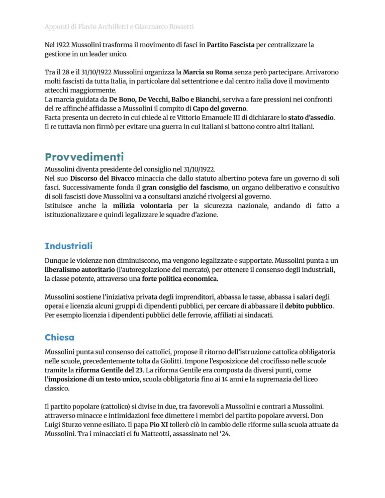
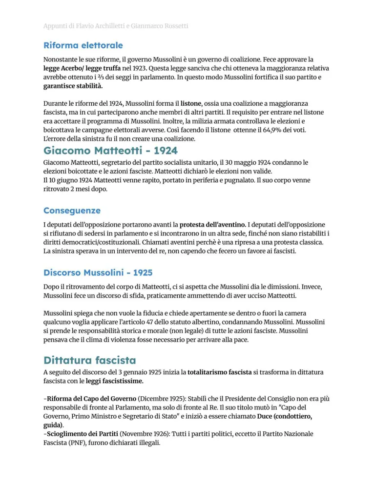
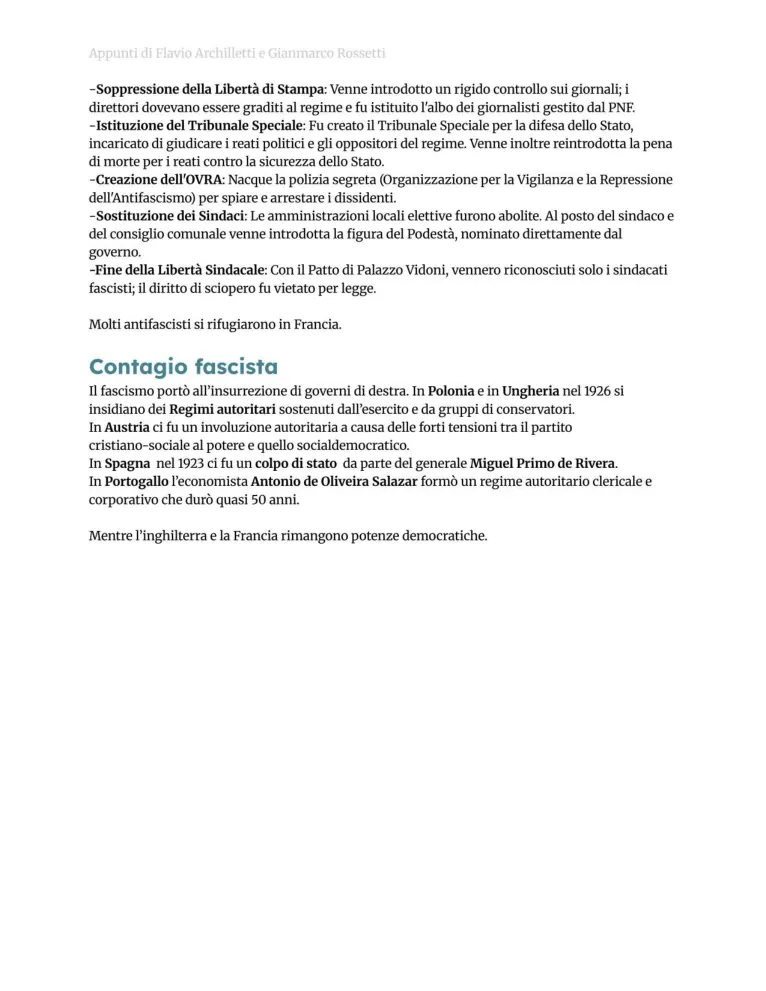

Fascismo italiano
Fasci di combattimento, squadrismo, marcia su Roma, leggi fascistissime, propaganda, Lateranensi e politica estera.
Studio guidato
Origini
Il fascismo nasce nel dopoguerra, in un clima di crisi economica, paura del socialismo, nazionalismo e sfiducia verso lo Stato liberale. Nel 1919 Mussolini fonda i Fasci di combattimento.
Violenza e ascesa
Lo squadrismo colpisce socialisti, sindacalisti e amministrazioni locali. Nel 1922 la marcia su Roma spinge il re ad affidare il governo a Mussolini.
Dalla legalità alla dittatura
Con la legge Acerbo e le elezioni del 1924 il fascismo rafforza il potere. L’assassinio di Matteotti e la crisi dell’Aventino precedono le leggi fascistissime del 1925-1926, che eliminano libertà politiche e opposizioni.
Regime
Il regime controlla stampa, scuola, organizzazioni giovanili, lavoro e propaganda. Il partito unico, la polizia politica e il culto del duce trasformano l’Italia in dittatura.
Chiesa e politica estera
I Patti Lateranensi del 1929 regolano i rapporti con la Chiesa. Negli anni Trenta il regime conquista l’Etiopia, si avvicina alla Germania nazista, approva le leggi razziali del 1938 e firma il Patto d’Acciaio nel 1939.
Parole chiave
Pagine originali dal file
Le immagini sotto mantengono il riferimento diretto alle pagine del PDF usato come base del sito.




Quiz finale
Devi rispondere correttamente a tutte le 12 domande. Se ne sbagli anche solo una, il quiz si azzera e ricomincia da capo.